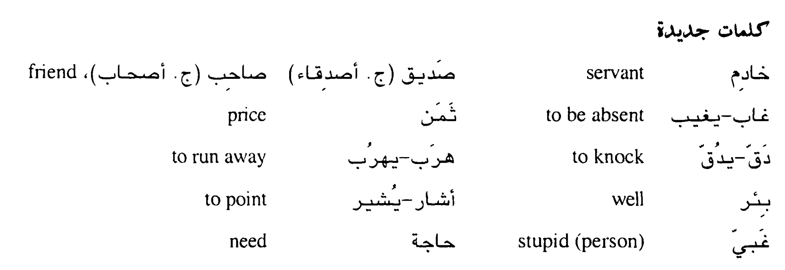

اللص المتردد
The wavering thief
عمل رجل خادما في بيت رجل غني، واتفق مع واحد من أصدقائه على سرقة أشياء من ذلك البيت، فبدأ الصديق يجيء عندما يغيب أهل
البيت، ويسرق الأشياء مع الخادم و يبيعها، وياخذ كل منهما نصف الثمن.
في ليلة من الليالي خرج أهل البيت فجاء صديق الخادم وبدأ الاثنان يجمعان الأشياء لسرقتها ، وبينما هما مشغولان فى ذلك دق
صاحب البيت الباب الأمامى، وكان للبيت باب أخر لا يعرفه الصديق. فقال الخادم: اهرب من الباب الذي عند البئر. وأشار بيده
الى الباب. فذهب الصديق ووجد الباب ولكنه لم يجد البئر، فرجع الى الخادم وقال له: وجدت الباب ولكن ما وجدت البئر. فقال
الخادم: لقد ذكرت لك البئر حتى تعرف اين الباب، إذا وجدت الباب اخرج بسرعة قبل أن يدخل صاحب البيت. فقال الصديق: ولكن
لماذا ذكرت البئر وهي ليست هناك؟ فقال له الصديق: ايها الغبي، اهرب إذا وجدت الباب فلا حاجة لك بالبئر. فرد الصديق :ولكن
كيف أهرب وقد حيرتنى وذكرت بئرأ هى ليست هناك؟ وبقى على هذا الحال يبحث عن البئر حتى دخل صاحب البيت فقبض عليه و ضربه ثم
أخذه الى حاكم
